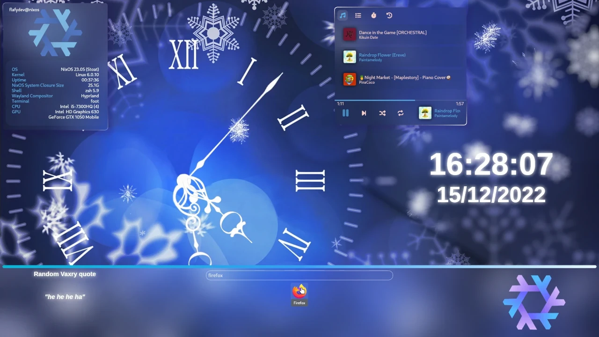
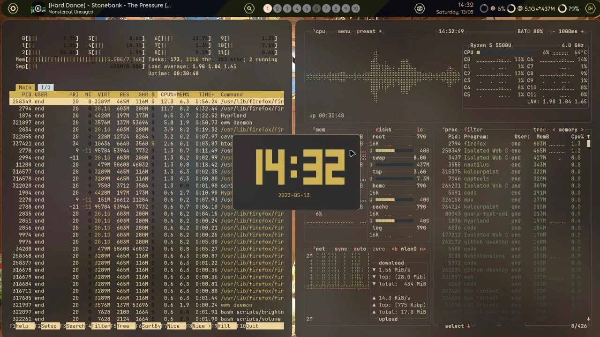
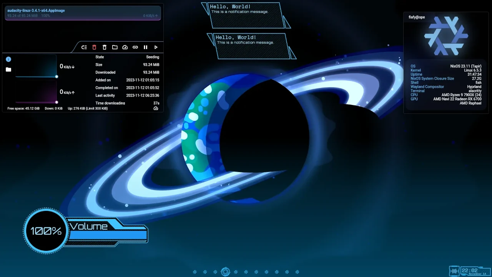

Qui possiamo osservare alcuni delle migliaia di setup della community, in questo caso ci concentreremo sui vincitori dei tre concorsi ufficiali tenuti dagli sviluppatori
Unnamed di Flafy
Summer Gruv di end_4
Celestial di Flafy
Setup di TRvsan